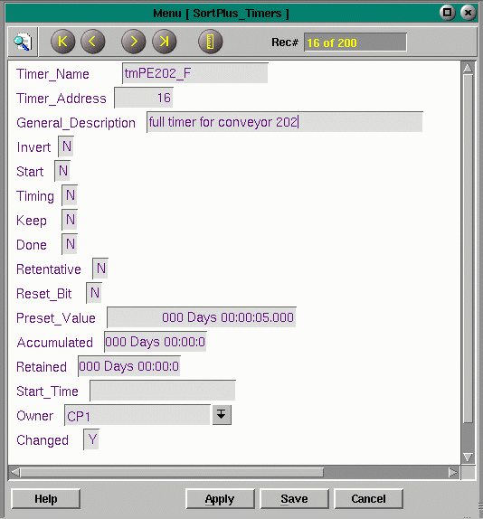

|
Timers can be accessed with the System Timers selection or by pressing F7. Timers are viewed one timer per screen, a type 2 menu. Use the right and left angle buttons to view the previous or next record. Page up and page down will also view previous or next timers. Timers are used by FortnaPlus© to time system events. A software construct, they are used predominantly, but not exclusively, in full detection, jam detection and motor chains. Timers are added through timemenu. The ASCII file, timemenu.asc is found in the FORTNA directory. Timers have many uses and are pull-downs into other FORTNA menus such as, Jamzones, Jamcheck, Fullline, Mtrchain and Merges. They are used in logic and in configuring transfers such as in the PROJECT menus, PickCfg and PackCfg. The System Timers menu displays the information for one timer at a time. Be careful with the Start and Done bits because forcing them to the opposite state will cause the timer to react. Use the arrow buttons and searching to locate a particular timer. |
 |
The following are the fields in timemenu and their domain descriptions:
Timer_Name - allows the timer to be referenced from other menus. Often named for photo eyes, motors and conveyor parts or locations.
Timer_Address - FortnaPlus© assigns sequential numbers to the timers to aid in referencing them from other menus.
General_Description - a description of the timer's function.
Invert - seldom used.
Start - when set true (Y) the timer starts timing, set by the program when the timer is to be started.
Timing - internal code sets to (Y) while timer is timing.
Keep - not used. Designed to allow a (Y) to keep the timer timing constantly.
Done - internally handled, (Y) when the timer's accumulated time reaches the preset value.
Retentive - causes the timer to begin timing where it last stopped, saving the time accumulated in the Retained time field.
Reset_Bit - when true, clears Done, Accumulated and Retained. If the Retentive flag is also set, clears timing.
Preset_Value - the timer preset in hours, minutes, seconds, tenths of seconds (H:MM:SS:T). A number typed in will appear as seconds and indicates the duration that the timer will time before done.
Accumulated - set automatically, shows the accumulated time for the timer while it is running or the last time it ran. In (H:MM:SS:T) format.
Retained - used by retentive timers, shows the total accumulated time for the timer since last reset.
Start_Time - fills in automatically.
Owner - the machine that owns the timer.
Changed - a boolean variable, true whenever the timer has changed.
Copyright © 2001 Fortna Inc. All rights reserved.